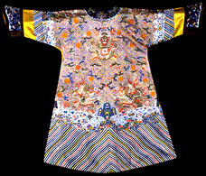
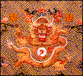

<!--This file created 10/16/97 5:56 PM by Claris Home Page version 2.0-->
<HTML>
<HEAD>
   <TITLE>Mpls Inst Arts - World Mythology: Dragon Robe</TITLE>
   <META NAME="GENERATOR" CONTENT="Claris Home Page 2.0">
   <X-SAS-WINDOW TOP="162" BOTTOM="480" LEFT="24" RIGHT="554">
<HEAD>
</HEAD>
<BODY TEXT="#111111" LINK="#660000" ALINK="#AA0000" VLINK="#444444" BACKGROUND="backgroundbrown.gif">

<P><FONT SIZE="+2">Curriculum Materials: World Mythology</FONT>
<HR>
<TABLE BORDER="3">
   <TR>
      <TD>
         <P><CENTER><A HREF="introduction.html#top">Introduction</A>
         ~ <A HREF="mythbyimage.html#top">Myth by Image</A> ~
         <A HREF="culturelist.html#top">Myth by Culture</A> ~
         <A HREF="myths.html#top">Mythological Comparisons</A> ~
         <A HREF="glossary.html#top">Glossary</A> ~
         <A HREF="suggestedreading.html#top">Suggested Readings</A> ~
         <A HREF="downloadables.html#top">Downloadable Resources</A>
         ~ <A HREF="../tta/classroom_materials_order.html">How to Order</A> ~
         <A HREF="myth_evaluation.html#top">Your Comments Wanted</A>
         ~ <A HREF="#Story">Story</A> ~
         <A HREF="#Background">Background</A> ~
         <A HREF="#Questions">Questions</A></CENTER>
      </TD></TR>
</TABLE>
<HR>
<A NAME="top"></A>&nbsp;<TABLE BORDER="0" CELLSPACING="10" WIDTH="445">
   <TR>
      <TD>
         <P><A HREF="full_jpg/22.jpg"></A><BR>
         
         <B>Image 3</B><BR>
         
         <FONT SIZE="+2">Dragon Robe</FONT><BR>
         
         China<BR>
         
         1821-50 (Ch'ing dynasty)<BR>
         
         Embroidered silk, gold thread<BR>
         
         54 3/4 inches<BR>
         
         The John R. Van Derlip Fund 42.8.53<BR>
         
         <BR CLEAR="left">
         
         
         <HR>
         <A NAME="Key"></A></P>
         
         <P><CENTER><B>Key Ideas</B></CENTER></P>
         
         <UL>
            <LI>In Chinese mythology the dragon has the power to
            bring rain.
            
            <LI>The dragon frequently appears on Chinese court robes
            as a <A HREF="glossary.html#SYMBOL">SYMBOL</A> of the
            emperor's power to mediate between heaven and earth.
            
            <LI>In keeping with the strict dress codes of the Ch'ing
            (ching) dynasty, the color, cut, and symbolic decoration
            of this empress's dragon robe indicate that its wearer is
            royalty.
         </UL>
         
         <P>
         <HR>
         <A NAME="Story"></A></P>
         
         <P><CENTER><B>Story</B></CENTER></P>
         
         <P>A T'ang (tong) dynasty emperor visited the Chinese city
         of Loyang (low-yang) during a long spell of very hot, dry
         weather. There, in a temple, lived an Indian priest named Wu
         Wei (woo way), who knew how to call forth the dragon who
         brings rain. The emperor begged Wu Wei to bring rain to his
         scorched land. The priest refused. The heat was seasonable,
         he said, and summoning the dragon would do much damage. The
         emperor said that the people were suffering because of the
         drought. Any rain, he pleaded, even if accompanied by
         roaring winds and crashing thunder, would be good. Finally
         Wu Wei agreed.</P>
         
         <P>Wu Wei ordered everything from the temple except for one
         bowl of water to be removed. Stirring the water, he repeated
         magical words hundreds of times. Presently, a red
         finger-sized dragon appeared, raising its head slightly
         above the water's surface. Then it slowly disappeared. Wu
         wei stirred the water again, chanting a spell three times.
         From the bowl a white vapor rose several feet into the air
         and floated toward the temple door.</P>
         
         <P>"Go," Wu Wei ordered the emperor's messenger, "for the
         rain is coming!" As he fled to alert the emperor, the
         messenger glanced back to see the vapor roll like white silk
         out of the temple. Then darkness fell, bringing with it
         thunder and rain. Gale winds uprooted giant trees along the
         road as the storm overtook the terrified messenger. At last
         he reached the emperor, drenched but safe.</P>
         
         <P>
         <HR>
         <A NAME="Background"></A></P>
         
         <P><CENTER><B>Background</B></CENTER></P>
         
         <P><B>Dragons</B><BR>
         
         The Chinese dragon was a divine bringer of rain, necessary
         for the good of all. The dragon was also a symbol of the
         good emperor whose wisdom and divine power assured the
         well-being of his subjects. Many legends draw connections
         between the dragon and the emperor. Some emperors even
         claimed to have descended from the dragon. For others,
         dragons were special protectors.</P>
         
         <P>Chinese dragons could make themselves as large as the
         universe or as small as a silkworm. They could also change
         color and disappear in a flash. Dragons were rarely seen
         because they cleverly hid in caves burrowed into the lofty
         mountains, or coiled up on the bottom of the deepest seas.
         Any sighting of a dragon boded well - it meant that Heaven
         was letting the people know that their ruler was doing a
         good job. Obviously, rulers were eager to hear of any
         reports of dragons in their domain.</P>
         
         <P><B>Ch'ing Dynasty</B><BR>
         
         In 1644, the nomadic Manchu (man-CHEW) warriors from
         northern China overthrew China's Ming rulers and established
         the Ch'ing dynasty. The Manchu admired and quickly adopted
         the culture and government of the native Chinese they had
         conquered. Still, in their official clothing styles, the
         Manchu emphasized their own distinctive cultural heritage.
         Inspired by the riding garments of their nomadic days,
         Ch'ing robes had long tapered sleeves, tight cuffs, narrow
         neck openings, side closures, and slit skirts. Although the
         cut was new, Ch'ing robes were decorated with symbols from
         traditional Chinese mythology, most notably the dragon.</P>
         
         <P>Everyone who attended and served at court during the
         Ch'ing dynasty wore symbolic robes. Rank and status within
         the court were indicated by the cut, color, and symbolic
         decoration of one's robe. The highest rank was that of
         emperor, empress, or empress dowager. Only they were allowed
         to wear yellow robes bearing the five-toed dragon
         <A HREF="glossary.html#MOTIF">MOTIF</A> (moe-TEEF).</P>
         
         <P><B>Dragon Robe</B><BR>
         
         This type of semiformal court robe is called <I>ch'i-fu</I>
         (chee-foo), which translates as "festive dress." The color
         and cut indicate that this robe was worn by an empress.</P>
         
         <P><B>Description</B><BR>
         
         The dragon on this robe (see detail) is a distinctive type
         associated with the emperor. Its wide, flat head is topped
         by horns and flanked by wiry whiskers. Scales and sharp
         spines cover its curving body. Five short legs with powerful
         claws emerge from the dragon's snakelike torso. Flames spark
         outward from its joints. The dragon tosses a flaming pearl
         between its claws.</P>
         
         <P>The dragon cavorts in a celestial landscape above a
         rainbow-hued diagonal ocean whose frothy waves crash against
         three rocky mountains, all of which represent the earth. The
         heavens are represented by a band of colorful
         <A HREF="glossary.html#STYLIZED">STYLIZED</A>, stringy
         clouds that curl on top of the waves and float up in little
         ovals through the robe.<BR CLEAR="left">
         
         <BR>
         
         <B>Symbols</B><BR>
         
         The dragon is the centerpiece of an elaborate set of images
         that symbolize the emperor's authority as an intermediary in
         the universal order between heaven and earth. The great and
         beneficial power of the dragon could be brought to the
         people by the good governance of the emperor. The pearl
         within the dragon's grasp is a symbol of wisdom. Like a
         worthy emperor, the dragon always seeks wisdom.</P>
         
         <P>Many symbols of good luck and power surround the dragon.
         The whole <A HREF="glossary.html#BACKGROUND">BACKGROUND</A>
         is embroidered with an intricate
         <A HREF="glossary.html#PATTERN">PATTERN</A> of connected
         bright blue swastikas. In China the swastika symbolized good
         luck and the number 10,000. Thus any symbol of blessing laid
         against it is multiplied 10,000 times. Several red bats fly
         through the heavens below the dragon. Bats were considered
         emblems of longevity and happiness because the words for
         happiness and bat sound similar. To either side of the
         dragon's head are red stylized <I>shou</I> (show)
         characters, which wish long life for the robe's wearer.
         <HR>
         </P>
         
         <P><CENTER><B><A NAME="Questions"></A>Discussion
         Questions</B></CENTER></P>
         
         <P><B>Look</B><BR>
         
         <B>1.</B> <B>Tell the story of Wu Wei and the dragon.
         </B>The dragon frequently appears on Chinese court robes
         like this one as a <A HREF="glossary.html#SYMBOL">SYMBOL</A>
         for the emperor's power to mediate between heaven and earth
         for the well-being of the people. What is a symbol?
         <B>(Something that stands for or represents another thing or
         idea.)</B> Where are dragon symbols on this robe?
         <B>(Center, lower left and right, left and right shoulders,
         tiny dragons on sleeve borders.)</B> How did the emperor
         mediate between heaven and earth in the story? <B>(He
         persuaded a priest to summon a dragon in order to bring
         rain.)</B></P>
         
         <P><B>2.</B> This dragon robe is covered with
         <A HREF="glossary.html#SYMBOL">SYMBOLS</A> that stand for
         the emperor's authority to mediate between heaven and earth.
         Find multicolored lines that represent "standing water."
         <B>(Hem and sleeves of the robe.)</B> Find frothy ocean
         waves. <B>(Semicircles above the diagonal stripes.)</B> Find
         three prism-shaped rock formations that symbolize mountains.
         <B>(Above the ocean waves.)</B> Find colorful stringy clouds
         that float throughout the robe. Find red bats that symbolize
         happiness. <B>(The Chinese word for happiness and bat sound
         similar.) (Red bats fly through the sky below the central
         dragon.) </B> Find the round red <I>shou</I> character, a
         symbol of long life. <B>(Scattered throughout the area
         surrounding the dragons.)</B> Find three pearls that
         symbolize wisdom. <B> (White circles with red flames held by
         each of the three central dragons.) </B> <B>(See also THINK
         1.)</B></P>
         
         <P><B>3.</B> <B>Show detail of image 22.
         </B><A HREF="glossary.html#PATTERN">PATTERN</A> can be made
         up of any repeated elements such as line, shape, or color.
         What pattern do you see on the
         <A HREF="glossary.html#BACKGROUND">BACKGROUND</A> of this
         robe? <B>(Bright blue connecting lines that make a
         background for other
         <A HREF="glossary.html#SYMBOL">SYMBOLS</A>.)</B> Do these
         lines look familiar to you? <B>(Point out the swastika in
         the pattern and explain that in traditional Chinese culture
         it symbolizes luck and the number 10,000.)</B></P>
         
         <P><B>4.</B> <B>Show detail of image 22.</B> What is this
         robe made of? <B>(Fabric.)</B> How are the symbols and
         patterns applied?
         <B>(<A HREF="glossary.html#EMBROIDERY">EMBROIDERY</A>: the
         technique of sewing decorative designs on fabric with needle
         and thread.)</B> How can you tell? <B>(Thread creates tiny
         lines within each design, uneven edges of designs show where
         the thread has gone through the fabric.)</B></P>
         
         <P><B>5.</B> During the Chinese Ch'ing dynasty, everyone who
         attended and served at court wore special robes. Rank and
         status within the court were indicated by the cut, color,
         and <A HREF="glossary.html#SYMBOL">SYMBOLIC</A> decoration
         of these robes. The emperor, empress, and empress dowager
         wore yellow robes with five-clawed dragons. The crown prince
         wore apricot yellow, while the imperial princes wore blue or
         brown. Officials of the first through third ranks dressed in
         blue robes with nine dragons. Officials of the fourth
         through sixth ranks wore blue robes with eight four-clawed
         dragons. Who wore this dragon robe? <B>(The emperor,
         empress, or empress dowager. The colors and the cut of this
         particular robe indicate that it was worn by the
         empress.)</B></P>
         
         <P>
         <HR>
         <BR>
         
         <B>Think</B><BR>
         
         <B>1.</B> <B>Make a list on the board of all the
         <A HREF="glossary.html#SYMBOL">SYMBOLS</A> and their
         meanings discussed in LOOK 2</B>. The symbols on this dragon
         robe are associated with the emperor's authority to
         intermediate between heaven and earth. Which of the symbols
         are related to earth? <B> (Water, waves, and mountains.)</B>
         Which of the symbols are related to the heavens? <B>(Clouds,
         bats, and dragons.)</B> Are the <I>shou</I> character for
         long life and the pearls symbolizing wisdom related to
         heaven and/or earth? <B>(No.)</B> Why do you think they
         appear on the robe? <B>(They are related to qualities
         desirable in an emperor.)</B></P>
         
         <P><B>2.</B> All of the decorations on this robe were
         embroidered by hand. How long do you think it took to make
         this robe? <B>(Years!)</B></P>
         
         <P><B>3.</B> The blue swastika pattern that makes up the
         background of this robe is symbolic of good luck and the
         number 10,000. Why do you think a symbol for 10,000 appears
         on the empress's robe? <B>Explain that any symbol of
         blessing laid against the swastika is multiplied 10,000
         times.</B></P>
         
         <P><B>4.</B> Chinese dragons were magical, mythical animals
         that could make themselves as large as the universe or as
         small as a silkworm. They could change color and disappear
         in a flash. Dragons were rarely seen because they hid in
         caves or at the bottom of the sea. Any sighting of a dragon
         foretold happiness and good fortune. Can you think of other
         magical, mythical characters who bring good luck and good
         fortune? <B>(Leprechauns, fairies, elves, angels, a genie in
         a lamp.)</B></P>
         
         <P>
         <HR>
      
      </TD></TR>
</TABLE> <TABLE BORDER="3">
   <TR>
      <TD>
         <P><CENTER><A HREF="introduction.html#top">Introduction</A>
         ~ <A HREF="mythbyimage.html#top">Myth by Image</A> ~
         <A HREF="culturelist.html#top">Myth by Culture</A> ~
         <A HREF="myths.html#top">Mythological Comparisons</A> ~
         <A HREF="glossary.html#top">Glossary</A> ~
         <A HREF="suggestedreading.html#top">Suggested Readings</A> ~
         <A HREF="downloadables.html#top">Downloadable Resources</A>
         ~ <A HREF="../tta/classroom_materials_order.html">How to
         Order</A> ~ <A HREF="myth_evaluation.html#top">Your Comments
         Wanted</A> ~ <A HREF="#Story">Story</A> ~
         <A HREF="#Background">Background</A> ~
         <A HREF="#Questions">Questions</A></CENTER>
      </TD></TR>
</TABLE></P>
</BODY>
</HTML>
